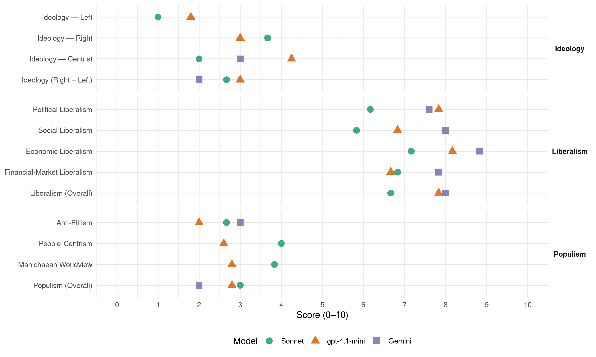

LNP (Australia, 2019)
manifesto_id 63621_201905
Get full text: This site shows derived annotations and short verbatim quotes only. The full manifesto text is © Manifesto Project / WZB — obtain it via manifesto-project.wzb.eu using the manifesto_id above.
Headline scores
| Dimension | Sonnet | gpt-4.1-mini | Gemini |
|---|---|---|---|
| Populism (Overall) | 3.0 | 2.8 | 2.0 |
| Anti-Elitism | 2.7 | 2.0 | 3.0 |
| People-Centrism | 4.0 | 2.6 | – |
| Manichaean Worldview | 3.8 | 2.8 | – |
| Ideology (Right − Left) | 2.7 | 3.0 | 2.0 |
| Liberalism (Overall) | 6.7 | 7.8 | 8.0 |
| Political Liberalism | 6.2 | 7.8 | 7.6 |
| Social Liberalism | 5.8 | 6.8 | 8.0 |
| Economic Liberalism | 7.2 | 8.2 | 8.8 |
| Financial-Market Liberalism | 6.8 | 6.7 | 7.8 |
Evidence per dimension
Economic Liberalism
Gemini · score 9.0 · verified · chunk 1
“lower taxes for small and medium businesses”
The Morrison Government is already delivering lower taxes for small and medium businesses. Lower taxes mean more money to reinvest back into the business
Gemini · score 9.0 · verified · chunk 2
“reducing taxes on small, medium and family businesses”
We will lower taxes for small, medium and family businesses. We will ensure they have the skills they need for today and tomorrow. We will ensure they get a fair go and are paid on time We will lift the red tape and paperwork burden. We will build modern transport infrastructure. We will build modern transport infrastructure. We will give small business access to billions of global customers. We will ensure they have affordable, reliable and sustainable energy. We will help them seize the opportunities of the digital economy. We will support their mental health and wellbeing. We will support tens of thousands of Australian women through our female entrepreneurs programs and help kick-start migrant businesses through the accelerator support program. A re-elected Morrison Government will:Support the creation of another quarter of a million small businesses over the next five years. Invest $100 million to establish the Australian Business Growth Fund to enhance equity financing to small businesses, complementing the Australian Business Securitisation Fund. By keeping the economy strong, the Morrison Government is providing the settings and opportunity for business to do what it does best. On the other hand, Labor do not believe in enterprise and aspiration. In opposition, Labor voted many times for higher taxes for small business. If elected, Labor will raise taxes on family businesses, condone union thuggery, impose unsustainable costs on small business through rigid workplace policies and hit small businesses hardest with their reckless emissions reduction plan. Our Plan Backing small businesses is and always will be at the centre of the Morrison Government’s plan for a stronger economy. Small and medium businesses make up over half of our economy and employ two-thirds of our workforce. They donate their time, money, goods and services to build their local community. Acknowledging the important role small business plays in our economy and community we have developed a comprehensive plan to back small and family businesses across Australia. The Morrison Government’s plan is making it easier for aspiring Australians to start a small business and or existing small businesses to expand. Since our election in 2013, the Liberal Nationals Government has revitalised the small business sector. More than 230,000 new small businesses have opened their doors, creating hundreds of thousands of new jobs. We are committed to small business creation – because when small businesses are created jobs are created. That is why a re-elected Morrison Government will support the creation of another quarter of a million small businesses over the next five years. Growing small businesses by expanding their access to finance The Morrison Government will significantly enhance access to funds for small business across Australia. We understand that small businesses find it difficult to obtain finance other than on a secured basis. And that small businesses that have already obtained secured finance but wish to continue to grow also find it difficult. With access to finance a critical issue, the new $2 billion Australian Business Securitisation Fund will start on July 1 this year. This fund increases small business access to competitive finance by providing more funding for small banks and non-bank lenders. We also know that access to debt financing is not the only constraint to small business growth. Many small and family businesses find it difficult to attract passive equity investment to enable them to grow without taking on additional debt or giving up control of their business. A re-elected Morrison Government will establish the Australian Business Growth Fund by providing $100 million in funding and partnering with financial institutions to enhance equity financing to small businesses. The Fund will aim to expand to $1 billion as it matures. Both of these Funds are in addition to the reforms that took effect last year which allow businesses to raise capital through crowdfunding. The Australian Business Growth Fund A re-elected Morrison Government will establish the Australian Business Growth Fund by providing $100 million in funding. Partnering with financial institutions the aim is for the Growth Fund to expand to $1 billion as it matures. It is expected to back 30-50 businesses each year with annual turnovers between $2 million and $50 million. The Growth Fund will significantly enhance small and family businesses’ ability to access funding, filling a gap in the market that is preventing them from reaching their full potential. Many small and family businesses find it difficult to attract passive equity investment to enable them to grow without taking on additional debt or giving up control of their business. The Reserve Bank of Australia has acknowledged that “it’s not the absence of entrepreneurial spirit, it’s the absence of entrepreneurial finance that’s been the main factor holding that part [small business] of the economy back”. The Growth Fund will provide patient long-term capital, enabling small businesses to grow while the owners retain control of their business. The Growth Fund is modelled on similar vehicles in the UK and Canada. Since 2011, the UK equivalent has invested $2.7 billion into small businesses in a range of sectors across the economy. It will operate commercially and independent of Government. An independent board and management team will run the Growth Fund. Investment decisions will be made by professional managers independent of Government and performance will be assessed on a fully commercial basis according to private sector funding models. Small businesses that receive equity funding will also be provided with mentoring, coaching and access to a talent pool of expert staff to maximise the benefits of the patient capital investment. The Small Business Ombudsman has also called on Government to ”fast-track the establishment of the Australian Business Growth Fund to address this long-term funding gap.” COSBOA have also provided their support for the fund: “All in all, the ABSF and the ABGF are outstanding responses to the decade long challenges of SME financing in Australia. Once implemented, they will enable small business owners to invest in growth with consequent benefits for Australia’s future economic prosperity and employment growth.” Lowering taxes for small, medium and family businesses
Gemini · score 9.0 · verified · chunk 3
“lower taxes for small business”
The Morrison Government has a clear plan to lower taxes for small business. In contrast, Labor has
Gemini · score 9.0 · verified · chunk 4
“lower taxes so that you can keep more”
the Morrison Government has a plan for lower taxes so that you can keep more of the money you earn. We have
Gemini · score 8.0 · verified · chunk 5
“deregulating pricing where appropriate”
pricing, including deregulating pricing where appropriate. Introducing a new
Gemini · score 9.0 · verified · chunk 6
“delivering more free trade agreements”
including by delivering more free trade agreements and supporting an Australian
gpt-4.1-mini · score 9.0 · verified · chunk 1
“Lower taxes for small and family businesses”
The Morrison Government will continue to deliver tax relief to small and family businesses. Lower taxes mean more money to reinvest back into the business and create more jobs for Australians. The Morrison Government has already provided lower taxes to around 3.4 million small, medium and family businesses employing over 7 million workers.
gpt-4.1-mini · score 9.0 · verified · chunk 2
“delivering lower taxes for small business”
The Morrison Government has a clear plan to lower taxes for small business. In contrast, Labor has a plan to impose $387 billion of higher taxes – each and every one of which are bad for business. A Shorten Labor government would be the highest taxing government in Australia’s history.
gpt-4.1-mini · score 8.0 · verified · chunk 3
“The business tax rate for small and medium-sized companies has been reduced from 30 per cent to 27.5 per cent”
The Morrison Government wants small businesses to prosper. We want them to employ even more Australians. So we are lowering taxes – the business tax rate for small and medium-sized companies has been reduced from 30 per cent to 27.5 per cent and will fall further to 25 per cent in 2021-22. Unincorporated Queensland small businesses are receiving help to get ahead with the Government’s increase in the unincorporated tax discount.
gpt-4.1-mini · score 7.0 · verified · chunk 4
“We are lowering taxes – the business tax rate for small and medium-sized companies has been reduced from 30 per cent to 27.5 per cent and will fall further to 25 per cent in 2021-22”
Supporting small and family businesses Small and family businesses are central to the Morrison Government’s economic plan for Australia and for Western Sydney. They are the engine room of our economy, with around 215,000 small and medium businesses in Western Sydney employing thousands of workers. When small businesses are healthy, all Australians are better off. It means more jobs, more choice, better living standards and more vibrant and connected communities. The Morrison Government wants small businesses to prosper. We want them to employ even more Australians. So we are lowering taxes – the business tax rate for small and medium-sized companies has been reduced from 30 per cent to 27.5 per cent and will fall further to 25 per cent in 2021-22.
gpt-4.1-mini · score 8.0 · verified · chunk 5
“Keeping the economy strong is vital. It is only by building a stronger economy that we can guarantee the essential services”
We understand that people with disability want to play an important role contributing to the social and economic life of our community. We recognise that it is good for them, their families and the nation. Keeping the economy strong is vital. It is only by building a stronger economy that we can guarantee the essential services that people with disability, their families and their carers rely on and deliver them the jobs they deserve.
gpt-4.1-mini · score 8.0 · verified · chunk 6
“We are reducing taxes so businesses can grow and employ more Australians”
Lower taxes for small and medium businesses We are reducing taxes so businesses can grow and employ more Australians. We have fast-tracked tax cuts for around 3.3 million small and medium-sized Australian businesses with a turnover of less than $50 million, enabling them to invest in and invigorate their businesses.
Sonnet · score 8.0 · verified · chunk 1
“lower taxes and more jobs”
The Morrison Government will build an even stronger and more competitive economy, with lower taxes and more jobs.
Sonnet · score 8.0 · verified · chunk 2
“new free trade agreements opening up”
new free trade agreements opening up new market opportunities for Tasmanian produce, and a range of regional economic development projects
Sonnet · score 7.0 · verified · chunk 3
“lowering the 32.5 per cent tax rate to 30 per cent”
A re-elected Morrison Government will also deliver long-term structural reform by lowering the 32.5 per cent tax rate to 30 per cent from 1 July 2024.
Sonnet · score 7.0 · verified · chunk 4
“lower taxes so that you can keep”
By contrast, the Morrison Government has a plan for lower taxes so that you can keep more of the money you earn.
Sonnet · score 6.0 · verified · chunk 5
“free trade agreement with the European Union”
A re-elected Morrison Government will prioritise the conclusion of a free trade agreement with the European Union, the implementation of the India Economic Strategy
Sonnet · score 7.0 · verified · chunk 6
“delivering more free trade agreements”
Growing exports by Australian manufacturers including by delivering more free trade agreements and supporting an Australian Made export campaign to give our manufacturers a bigger edge in overseas markets.
Financial-Market Liberalism
Gemini · score 8.0 · verified · chunk 1
“improving access to finance”
Strengthen small and medium businesses by lowering business tax, improving access to finance, ensuring small business is paid on time by big business and government
Gemini · score 8.0 · verified · chunk 2
“increases small business access to competitive finance”
With access to finance a critical issue, the new $2 billion Australian Business Securitisation Fund will start on July 1 this year. This fund increases small business access to competitive finance by providing more funding for small banks and non-bank
Gemini · score 8.0 · verified · chunk 3
“increasing access to finance with the $2 billion Australian Business Securitisation Fund”
streamlining red tape and simplifying tax reporting; helping them to expand by increasing access to finance with the $2 billion Australian Business Securitisation Fund and ensuring they get paid
Gemini · score 8.0 · verified · chunk 4
“increasing access to finance with the $2 billion”
streamlining red tape and simplifying tax reporting; helping them to expand by increasing access to finance with the $2 billion Australian Business Securitisation Fund and
Gemini · score 7.0 · verified · chunk 5
“access water infrastructure loan funding”
private sector to access water infrastructure loan funding. Deliver the Murray-Darling
Gemini · score 8.0 · verified · chunk 6
“Australian Business Securitisation Fund”
with a new $2 billion Australian Business Securitisation Fund. THE CHOICE Labor
gpt-4.1-mini · score 7.0 · verified · chunk 1
“Additional resources for our corporate and financial regulators to ensure our businesses do the right thing”
Our economic plan is also laying the platform for continued strong growth. We are delivering lower taxes for hard-working Australians because we want Australians to earn more and keep more of what they earn. We have brought forward tax relief for small and medium businesses that employ millions of Australians. Our improved budget position enables us to invest more in the services that Australians rightly expect. Additional resources for our corporate and financial regulators to ensure our businesses do the right thing.
gpt-4.1-mini · score 8.0 · verified · chunk 2
“Australian Business Securitisation Fund”
We will grow small businesses by expanding their access to finance. The Morrison Government will significantly enhance access to funds for small business across Australia. With access to finance a critical issue, the new $2 billion Australian Business Securitisation Fund will start on July 1 this year.
gpt-4.1-mini · score 5.0 · verified · chunk 3
“The Morrison Government is investing $8.4 million to accelerate gas supplies from the NT to the east coast market”
The Morrison Government is investing $8.4 million to accelerate gas supplies from the NT to the east coast market. This will support the opening of the Beetaloo Sub-basin for exploration and development, and improve the transparency, competiveness and long-term security of gas supply in Australia. The funding will go towards environmental baseline work, a feasibility study on gas exploration areas, and an Aboriginal economic strategy to support the development of the Beetaloo.
gpt-4.1-mini · score 6.0 · verified · chunk 4
“The Morrison Government has announced a $3.5 billion Climate Solutions Plan, which is among the largest investments by Australia in emissions reduction”
Australia’s farmers are in the hands of the weather, and climate change forms part of this. The Morrison Government has announced a $3.5 billion Climate Solutions Plan, which is among the largest investments by Australia in emissions reduction. The Climate Solutions Plan will ensure Australia meets our 2030 target.
gpt-4.1-mini · score 7.0 · verified · chunk 5
“We have passed unexplained wealth legislation to confiscate even more criminals’ assets and invest the proceeds of crime back into communities”
Our Government has prioritised the safety of Australians by boosting funding for security agencies by over $3 billion since 2014. We have passed unexplained wealth legislation to confiscate even more criminals’ assets and invest the proceeds of crime back into communities to fight crime and treat drug addiction.
gpt-4.1-mini · score 7.0 · verified · chunk 6
“The new $2 billion Australian Business Securitisation Fund will start on July 1 this year”
With access to finance a critical issue, the new $2 billion Australian Business Securitisation Fund will start on July 1 this year. This fund increases small business access to competitive finance by providing more funding for small banks and non-bank lenders.
Sonnet · score 7.0 · verified · chunk 1
“access to more competitive finance”
The $2 billion Australian Business Securitisation Fund will increase access to more competitive finance following analysis that small to medium enterprises did not have access to the finance they need
Sonnet · score 7.0 · verified · chunk 2
“access to competitive finance”
This fund increases small business access to competitive finance by providing more funding for small banks and non-bank lenders.
Sonnet · score 7.0 · verified · chunk 3
“increase capital gains tax by 50%”
Labor’s housing and investment taxes will end negative gearing as we know it, and increase capital gains tax by 50%. If you own your own home it will be worth less, and if you rent you will pay more.
Sonnet · score 7.0 · verified · chunk 4
“$2 billion Australian Business Securitisation Fund”
helping them to expand by increasing access to finance with the $2 billion Australian Business Securitisation Fund and the $100 million Small Business Growth Fund
Sonnet · score 6.0 · verified · chunk 5
“review of southern Basin water markets”
Commission the Australian Competition and Consumer Commission to undertake a review of southern Basin water markets.
Sonnet · score 7.0 · verified · chunk 6
“new $2 billion Australian Business Securitisation Fund”
the new $2 billion Australian Business Securitisation Fund will start on July 1 this year. This fund increases small business access to competitive finance by providing more funding for small banks and non-bank lenders.
Political Liberalism
Gemini · score 8.0 · verified · chunk 1
“union muscle rather than the rule of law”
instead of surpluses. A reckless emissions reduction target instead of a responsible one. Policy based on envy rather than aspiration. Union muscle rather than the rule of law. Mr Shorten will take Australia in a very different direction.
Gemini · score 8.0 · verified · chunk 2
“commitment to tolerance and the rule of law”
preserving our economic strength, social cohesion and security. We believe in equal opportunity in a fair and compassionate society irrespective of someone’s race, religion or ethnic background. We will defend Australia’s democratic freedoms and its longstanding commitment to tolerance and the rule of law. A re-elected Morrison Government will ensure Australia
Gemini · score 8.0 · verified · chunk 4
“ensuring our laws are up to the task”
counter organised crime, illicit drugs and child exploitation by ensuring our laws are up to the task and our police and intelligence agencies
Gemini · score 7.0 · verified · chunk 5
“passed through the Parliament”
proposed that passed through the Parliament. Fighting drug crime
Gemini · score 7.0 · verified · chunk 6
“independent statutory review of the Act”
will consult widely on an independent statutory review of the Act. Consultation will begin
gpt-4.1-mini · score 8.0 · verified · chunk 1
“Record funding for Tasmanian public hospitals”
A stronger economy has allowed us to guarantee the services Tasmanians rely on and support the Tasmanian way of life. Our strong economic and budget management means we have been able to deliver: Record funding for Tasmanian public hospitals, with funding having increased by 44.5 per cent from $294 million in 2012-13 under Labor to $425 million in 2019-20.
gpt-4.1-mini · score 9.0 · verified · chunk 2
“defend Australia’s democratic freedoms and its longstanding commitment to tolerance and the rule of law”
We believe in equal opportunity in a fair and compassionate society irrespective of someone’s race, religion or ethnic background. We will defend Australia’s democratic freedoms and its longstanding commitment to tolerance and the rule of law. A re-elected Morrison Government will ensure Australia remains a cohesive and prosperous society where those who have a go get a fair go.
gpt-4.1-mini · score 7.0 · verified · chunk 3
“Funding for Queensland public hospitals will increase from $2.7 billion in 2012-13 to $4.9 billion in 2018-19”
Our Health Plan for Central Queensland strengthens the health system by providing affordable and accessible health services, including:Greater hospital and health services and infrastructure, including: $7 million for a new multi-level car park $0.52 million for Ozcare drug and alcohol services $0.14 million for Breaking the Barrier pilot study with the Central Queensland Multicultural Association More cancer services with $92.5 million for new MRIs across Queensland, including at Central Queensland Radiology Gladstone.
gpt-4.1-mini · score 7.0 · verified · chunk 4
“Record funding for NSW public hospitals, with funding having increased by 59 per cent from $4.3 billion in 2012-13 under Labor to $6.8 billion in 2019-20”
Strengthening the health system The Morrison Government’s health plan for Western Sydney will protect lives, improve lives and save lives. It builds on the record funding we have provided for New South Wales public hospitals, record levels of bulk billing and more than 2,000 new medicines listings subsidised through the Pharmaceutical Benefits Scheme (PBS) at an investment of $10.6 billion since 2013. Funding for NSW public hospitals will increase from $4.3 billion in 2012-13 to $6.8 billion in 2019-20 and is on track to increase to $8.8 billion under a new hospitals agreement.
gpt-4.1-mini · score 8.0 · verified · chunk 5
“Our Government has prioritised the safety of Australians by boosting funding for security agencies by over $3 billion since 2014”
After racking up $240 billion in deficits over six years when last in government, Labor does not have the track record to invest in keeping us safe. Our Government has prioritised the safety of Australians by boosting funding for security agencies by over $3 billion since 2014.
gpt-4.1-mini · score 8.0 · verified · chunk 6
“The Environment Protection and Biodiversity Conservation Act 1999”
The Environment Protection and Biodiversity Conservation Act 1999 (EPBC Act) was introduced by the Liberal Nationals in 1999 and it remains the cornerstone of Australian environmental regulation. To ensure the EPBC Act remains best-practice, the Morrison Government will consult widely on an independent statutory review of the Act.
Sonnet · score 6.0 · verified · chunk 1
“Union muscle rather than the rule of law”
A reckless emissions reduction target instead of a responsible one. Policy based on envy rather than aspiration. Union muscle rather than the rule of law.
Sonnet · score 7.0 · verified · chunk 2
“defend Australia’s democratic freedoms”
We believe in equal opportunity in a fair and compassionate society irrespective of someone’s race, religion or ethnic background. We will defend Australia’s democratic freedoms and its longstanding commitment to tolerance and the rule of law.
Sonnet · score 6.0 · verified · chunk 3
“Royal Commission into the sector”
$21.6 billion for aged care in 2019-20 across Australia, including funding for an additional 10,000 home care packages nationally, and a Royal Commission into the sector.
Sonnet · score 6.0 · verified · chunk 4
“democracy, rule of law”
The Morrison Government is committed to keeping Western Sydney communities safe. We will deliver a comprehensive suite of actions that will help keep people in Western Sydney safe.
Sonnet · score 6.0 · verified · chunk 5
“independent statutory body with strong investigation”
The NDIS Commission is an independent statutory body with strong investigation and regulatory powers.
Sonnet · score 6.0 · verified · chunk 6
“independent statutory review of the Act”
the Morrison Government will consult widely on an independent statutory review of the Act. Consultation will begin later this year and include feedback from business groups, environmental organisations, farmers and other land users.
Liberalism (Overall)
Gemini · score 8.0 · verified · chunk 1
“lower taxes for small and medium businesses”
The Morrison Government is already delivering lower taxes for small and medium businesses. Lower taxes mean more money to reinvest back into the business
Gemini · score 8.0 · verified · chunk 2
“commitment to tolerance and the rule of law”
preserving our economic strength, social cohesion and security. We believe in equal opportunity in a fair and compassionate society irrespective of someone’s race, religion or ethnic background. We will defend Australia’s democratic freedoms and its longstanding commitment to tolerance and the rule of law. A re-elected Morrison Government will ensure Australia
Gemini · score 8.0 · verified · chunk 3
“lower taxes for small business”
The Morrison Government has a clear plan to lower taxes for small business. In contrast, Labor has
Gemini · score 8.0 · verified · chunk 4
“lower taxes so that you can keep more”
the Morrison Government has a plan for lower taxes so that you can keep more of the money you earn. We have
Gemini · score 8.0 · verified · chunk 5
“deregulating pricing where appropriate”
pricing, including deregulating pricing where appropriate. Introducing a new
Gemini · score 8.0 · verified · chunk 6
“delivering more free trade agreements”
including by delivering more free trade agreements and supporting an Australian
gpt-4.1-mini · score 8.0 · verified · chunk 1
“Lower taxes for small and family businesses”
The Morrison Government will continue to deliver tax relief to small and family businesses. Lower taxes mean more money to reinvest back into the business and create more jobs for Australians. The Morrison Government has already provided lower taxes to around 3.4 million small, medium and family businesses employing over 7 million workers.
gpt-4.1-mini · score 9.0 · verified · chunk 2
“defend Australia’s democratic freedoms and its longstanding commitment to tolerance and the rule of law”
We believe in equal opportunity in a fair and compassionate society irrespective of someone’s race, religion or ethnic background. We will defend Australia’s democratic freedoms and its longstanding commitment to tolerance and the rule of law. A re-elected Morrison Government will ensure Australia remains a cohesive and prosperous society where those who have a go get a fair go.
gpt-4.1-mini · score 7.0 · verified · chunk 3
“The business tax rate for small and medium-sized companies has been reduced from 30 per cent to 27.5 per cent”
The Morrison Government wants small businesses to prosper. We want them to employ even more Australians. So we are lowering taxes – the business tax rate for small and medium-sized companies has been reduced from 30 per cent to 27.5 per cent and will fall further to 25 per cent in 2021-22. Unincorporated Queensland small businesses are receiving help to get ahead with the Government’s increase in the unincorporated tax discount.
gpt-4.1-mini · score 7.0 · verified · chunk 4
“Record funding for NSW public hospitals, with funding having increased by 59 per cent from $4.3 billion in 2012-13 under Labor to $6.8 billion in 2019-20”
Strengthening the health system The Morrison Government’s health plan for Western Sydney will protect lives, improve lives and save lives. It builds on the record funding we have provided for New South Wales public hospitals, record levels of bulk billing and more than 2,000 new medicines listings subsidised through the Pharmaceutical Benefits Scheme (PBS) at an investment of $10.6 billion since 2013. Funding for NSW public hospitals will increase from $4.3 billion in 2012-13 to $6.8 billion in 2019-20 and is on track to increase to $8.8 billion under a new hospitals agreement.
gpt-4.1-mini · score 8.0 · verified · chunk 5
“Keeping the economy strong is vital. It is only by building a stronger economy that we can guarantee the essential services”
We understand that people with disability want to play an important role contributing to the social and economic life of our community. We recognise that it is good for them, their families and the nation. Keeping the economy strong is vital. It is only by building a stronger economy that we can guarantee the essential services that people with disability, their families and their carers rely on and deliver them the jobs they deserve.
gpt-4.1-mini · score 8.0 · verified · chunk 6
“The Environment Protection and Biodiversity Conservation Act 1999”
The Environment Protection and Biodiversity Conservation Act 1999 (EPBC Act) was introduced by the Liberal Nationals in 1999 and it remains the cornerstone of Australian environmental regulation. To ensure the EPBC Act remains best-practice, the Morrison Government will consult widely on an independent statutory review of the Act.
Sonnet · score 7.0 · verified · chunk 1
“expand export opportunities through market-opening trade deals”
Better connect people to jobs… and allow businesses to connect to domestic and global export markets… Expand export opportunities through market-opening trade deals.
Sonnet · score 7.0 · verified · chunk 2
“new free trade agreements opening up”
new free trade agreements opening up new market opportunities for Tasmanian produce, and a range of regional economic development projects
Sonnet · score 7.0 · verified · chunk 3
“lower taxes and an increase in the instant asset tax write-off”
Back small and family businesses, with lower taxes and an increase in the instant asset tax write-off to $30,000 now expanded to medium-sized businesses.
Sonnet · score 6.0 · verified · chunk 4
“lower taxes so that you can keep”
By contrast, the Morrison Government has a plan for lower taxes so that you can keep more of the money you earn.
Sonnet · score 6.0 · verified · chunk 5
“Free Trade Agreements our government has delivered”
They want to meddle with the Free Trade Agreements our government has delivered. Labor’s trade policy will take us backwards.
Sonnet · score 7.0 · verified · chunk 6
“reduction in the business tax rate to 25 per cent”
These businesses will benefit from the Morrison Government’s tax reforms, including a reduction in the business tax rate to 25 per cent, an increase in the threshold for the instant asset write-off from $25,000 to $30,000.
Anti-Elitism
Gemini · score 3.0 · verified · chunk 3
“preferring to back big businesses and big unions”
opposed these reforms, preferring to back big businesses and big unions over the interests of small business
gpt-4.1-mini · score 1.0 · verified · chunk 1
“Labor thrives on conflict”
Bill Shorten and the Labor Party. Labor thrives on conflict, including policies to turn retirees against pensioners. Their devastating Retiree Tax is a $57 billion tax grab that would hit over 1 million Australians.
gpt-4.1-mini · score 2.0 · verified · chunk 3
“Labor has a plan to impose $387 billion of higher taxes”
Labor’s reckless policies will hit small business directly and hardest as they will also feel the flow-on effects of a weaker economy. Labor’s plan for higher taxes The Morrison Government has a clear plan to lower taxes for small business. In contrast, Labor has a plan to impose $387 billion of higher taxes – each and every one of which are bad for business.
gpt-4.1-mini · score 2.0 · verified · chunk 4
“Labor can’t manage money and they can’t manage the economy”
Labor can’t manage money and they can’t manage the economy. When Labor can’t manage money, they come after yours. Labor plans to hit Australians with $387 billion in big new taxes which will hurt Central Queenslanders
gpt-4.1-mini · score 2.0 · verified · chunk 5
“Labor does not have the track record to invest in keeping us safe”
After racking up $240 billion in deficits over six years when last in government, Labor does not have the track record to invest in keeping us safe. Our Government has prioritised the safety of Australians by boosting funding for security agencies by over $3 billion since 2014.
gpt-4.1-mini · score 3.0 · verified · chunk 6
“Labor inflicted six long years of neglect and anti-agricultural policies”
is just not on Labor’s radar, which signals a return to the bad old days that the sector experienced under previous Labor governments. When last in office Labor inflicted six long years of neglect and anti-agricultural policies on Australian farmers to appease the Greens. Between 2007 and 2013, Labor’s agriculture funding was slashed from $3.8 billion to $1.7 billion.
Sonnet · score 3.0 · mixed · chunk 1
“militant union bosses will use old-style industrial muscle”
Under Labor, trade deals will stall. Militant union bosses will use old-style industrial muscle to disrupt workplaces and make unsustainable demands on business
Sonnet · score 3.0 · verified · chunk 2
“Labor can’t manage money”
Tasmania cannot afford to go back to the bad days of Labor, when there were fewer jobs, less opportunities and choice and more people on welfare. Labor can’t manage money and they can’t manage the economy.
Sonnet · score 3.0 · mixed · chunk 3
“preferring to back big businesses and big unions”
Labor did not support a level playing field and opposed these reforms, preferring to back big businesses and big unions over the interests of small business and consumers.
Sonnet · score 3.0 · mixed · chunk 4
“Labor can’t manage money”
A choice between a Government that is fixing the Budget and a Labor Party that can’t manage money. Labor can’t manage money and they can’t manage the economy.
Sonnet · score 3.0 · verified · chunk 5
“Labor simply raided the accounts of our law enforcement”
Rather than invest in the protection of Australians, the former Labor Government simply raided the accounts of our law enforcement agencies to prop up its Budget bottom line.
Sonnet · score 2.0 · verified · chunk 6
“Labor’s only plan is to offer taxpayer-funded subsidies”
While manufacturing has a bright future under the Morrison Government, Labor’s only plan is to offer taxpayer-funded subsidies to compensate for the damage they will do to the sector.
Ideology — Centrist
Gemini · score 3.0 · verified · chunk 3
“preferring to back big businesses and big unions”
opposed these reforms, preferring to back big businesses and big unions over the interests of small business
gpt-4.1-mini · score 7.0 · verified · chunk 1
“When you work hard, build your business and invest in your community you are having a go”
Small businesses are the beating heart of the Australian economy. When small businesses are healthy, all Australians are better off. It means more jobs, more choice, better living standards and more vibrant and connected communities. When you work hard, build your business and invest in your community you are having a go. And you will get a go under the Morrison Government.
gpt-4.1-mini · score 4.0 · verified · chunk 3
“Small and family businesses are at the centre of the Morrison Government’s economic plan”
Small and family businesses are at the centre of the Morrison Government’s economic plan for Australia and the NT. They are the engine room of our economy, with the NT’s 19,000 small and medium-sized businesses employing around 62,000 workers. When small businesses are healthy, all Australians are better off.
gpt-4.1-mini · score 3.0 · verified · chunk 4
“A choice between a Government that is delivering a stronger economy and a Labor Party that would weaken our economy”
There is a lot at stake at this election. And there is a clear choice. A choice between a Government that is delivering a stronger economy and a Labor Party that would weaken our economy.
gpt-4.1-mini · score 3.0 · verified · chunk 6
“Australians have a choice between the Morrison Government”
Labor’s plans will also lock out recreational fishers from over a third of marine parks. Australians have a choice between the Morrison Government that supports the forestry sector as one of the most renewable resources of the 21st century – or a Labor/Greens Government seeking to take us back to the dark days of forest lock-ups.
Sonnet · score 2.0 · verified · chunk 1
“delivering a strong economy or a Labor Party”
The Australian people have the choice between a Government that is delivering a stronger economy or Bill Shorten’s Labor Party that would weaken the economy.
Sonnet · score 2.0 · verified · chunk 2
“Tasmanians get its fair share”
ensured Tasmania gets its fair share of GST, and provided a direct link between Tasmania and the world with the $38 million international runway
Sonnet · score 2.0 · verified · chunk 3
“engine room of our economy”
They are the engine room of our economy, with the NT’s 19,000 small and medium-sized businesses employing around 62,000 workers.
Sonnet · score 2.0 · verified · chunk 5
“safety and security of Australians, their families”
Only the Morrison Government can be trusted to ensure the safety and security of Australians, their families and communities.
Sonnet · score 2.0 · verified · chunk 6
“practical and meaningful environmental action”
The Morrison Government will continue the Liberal Nationals’ strong record of supporting practical and meaningful environmental action that gets results.
Ideology — Left
gpt-4.1-mini · score 1.0 · verified · chunk 1
“Labor’s $387 billion of higher taxes are bad for business”
Labor do not believe in enterprise and aspiration. Labor’s $387 billion of higher taxes are bad for business. Small business will get hit twice. First, Labor’s higher taxes would directly hit small business. Second, a Shorten Labor government would be the highest taxing government in Australia’s history.
gpt-4.1-mini · score 2.0 · verified · chunk 3
“Labor has a plan to impose $387 billion of higher taxes”
Labor’s reckless policies will hit small business directly and hardest as they will also feel the flow-on effects of a weaker economy. Labor’s plan for higher taxes The Morrison Government has a clear plan to lower taxes for small business. In contrast, Labor has a plan to impose $387 billion of higher taxes – each and every one of which are bad for business.
gpt-4.1-mini · score 2.0 · verified · chunk 4
“Labor plans to hit Australians with $387 billion in big new taxes which will hurt Central Queenslanders”
Labor can’t manage money and they can’t manage the economy. When Labor can’t manage money, they come after yours. Labor plans to hit Australians with $387 billion in big new taxes which will hurt Central Queenslanders
gpt-4.1-mini · score 2.0 · verified · chunk 5
“Labor oppose mandatory minimum sentences for child sex offenders”
Our Government believes in protecting Australian children from exploitation and heinous sexual offences. By contrast, Labor oppose mandatory minimum sentences for child sex offenders, meaning predators may not even spend a day behind bars.
gpt-4.1-mini · score 2.0 · verified · chunk 6
“Labor’s economy-wrecking emissions reduction targets”
Labor’s policies will weaken the manufacturing sector by making Australia a place in which it is harder to do business. Labor wants to punish manufacturing and other traditional industries with their economy-wrecking emissions reduction targets that would drive up energy prices and reduce manufacturing production.
Sonnet · score 1.0 · verified · chunk 1
“lower taxes for small, medium and family businesses”
The Morrison Government is already delivering lower taxes for small, medium and family businesses.
Sonnet · score 1.0 · verified · chunk 2
“lower taxes for small business”
We are delivering lower taxes for small, medium and family businesses so business owners can reinvest in their business and create more jobs.
Sonnet · score 1.0 · verified · chunk 5
“investing over $720 million over four years”
we are investing over $720 million over four years from 2018-19 in specific health initiatives to reduce the impact of drug and alcohol misuse
Sonnet · score 1.0 · verified · chunk 6
“reducing taxes so businesses can grow”
We are reducing taxes so businesses can grow and employ more Australians. We have fast-tracked tax cuts for around 3.3 million small and medium-sized Australian businesses.
Ideology (Right − Left)
Gemini · score 2.0 · verified · chunk 3
“preferring to back big businesses and big unions”
opposed these reforms, preferring to back big businesses and big unions over the interests of small business
gpt-4.1-mini · score 4.0 · verified · chunk 1
“A choice between a Government that is delivering a strong economy or a Labor Party that would weaken our economy”
There is a lot at stake at this election. And there is a clear choice. A choice between a Government that is delivering a strong economy or a Labor Party that would weaken our economy. A choice between a Government that is fixing the budget or a Labor Party that can’t manage money.
gpt-4.1-mini · score 3.0 · verified · chunk 3
“Labor can’t manage money and they can’t manage the economy”
Central Queensland cannot afford Labor governments at both the federal and state levels. Labor can’t manage money and they can’t manage the economy. When Labor can’t manage money, they come after yours. The Gunner Labor Government is cutting $11.2 billion in spending over the decade through a series of austerity measures and went to Canberra seeking an emergency bailout.
gpt-4.1-mini · score 3.0 · verified · chunk 4
“Labor can’t manage money and they can’t manage the economy”
Labor can’t manage money and they can’t manage the economy. When Labor can’t manage money, they come after yours. Labor plans to hit Australians with $387 billion in big new taxes which will hurt Central Queenslanders
gpt-4.1-mini · score 3.0 · verified · chunk 5
“Only the Morrison Government can be trusted to ensure the safety and security of Australians”
Only the Morrison Government can be trusted to ensure the safety and security of Australians, their families and communities. Cost The Coalition Government will provide an additional $24.1 million to expand our programs to create Safer Communities.
gpt-4.1-mini · score 2.0 · verified · chunk 6
“Labor inflicted six long years of neglect and anti-agricultural policies”
is just not on Labor’s radar, which signals a return to the bad old days that the sector experienced under previous Labor governments. When last in office Labor inflicted six long years of neglect and anti-agricultural policies on Australian farmers to appease the Greens. Between 2007 and 2013, Labor’s agriculture funding was slashed from $3.8 billion to $1.7 billion.
Sonnet · score 3.0 · verified · chunk 1
“individual enterprise and aspiration”
The Morrison Government will build an even stronger economy based on individual enterprise and aspiration while looking after Australians who need a helping hand.
Sonnet · score 3.0 · verified · chunk 2
“we stopped the boats”
The Liberal National government has also maintained strong borders – we stopped the boats, stopped the deaths at sea, removed children from detention
Sonnet · score 2.0 · verified · chunk 3
“lower taxes for small business”
Only the Morrison Government will support the economic development of the NT, its Indigenous communities and northern Australia more broadly. Our record includes backing major infrastructure projects, awarding Indigenous owned businesses more Commonwealth contracts, lowering taxes for small businesses.
Sonnet · score 3.0 · verified · chunk 4
“reduce the permanent migration program”
the Government has decided to reduce the permanent migration program ceiling by a cumulative 120,000 places over four years
Sonnet · score 3.0 · verified · chunk 5
“Labor does not have the track record”
After racking up $240 billion in deficits over six years when last in government, Labor does not have the track record to invest in keeping us safe.
Sonnet · score 2.0 · verified · chunk 6
“Labor’s economy-wrecking emissions reduction targets”
Labor wants to punish manufacturing and other traditional industries with their economy-wrecking emissions reduction targets that would drive up energy prices and reduce manufacturing production.
Ideology — Right
gpt-4.1-mini · score 3.0 · verified · chunk 1
“We have maintained strong borders – we stopped the boats”
The Liberal National government has also maintained strong borders – we stopped the boats, stopped the deaths at sea, removed children from detention, and cancelled the visas of thousands of criminals across the country, including 15 in Tasmania.
gpt-4.1-mini · score 3.0 · verified · chunk 3
“Labor’s car tax will increase the cost of vehicles by over $4,800”
Labor’s car tax will increase the cost of vehicles by over $4,800 and mandate electric vehicles for half of all new car sales. Seventeen of the top 20 vehicles sold in Australia don’t have models which meet Labor’s new carbon standard. Tradies and small businesses which need larger vehicles will be hardest hit by these disastrous new policies.
gpt-4.1-mini · score 4.0 · verified · chunk 4
“A choice between a Government that has secured our borders and is keeping Australians safe or a Labor Party that has learned nothing from its border security failures”
A choice between a Government that has secured our borders and is keeping Australians safe or a Labor Party that has learned nothing from its border security failures. Central Queensland cannot afford Labor governments at both the federal and state levels.
gpt-4.1-mini · score 4.0 · verified · chunk 5
“Labor will put access to workers at risk with prohibitive penalty rates and union domination”
On the other hand, Labor will put access to workers at risk with prohibitive penalty rates and union domination of industry needs. Labor will increase the difficulty, complexity and cost of developing appropriate visa types, robbing employers and employees of opportunity.
gpt-4.1-mini · score 1.0 · verified · chunk 6
“Labor restrictions on working holiday-makers will hurt regional Australia”
Labor restrictions on working holiday-makers will hurt regional Australia Labor and the ACTU’s plan to abandon the second year working holiday visa would remove over 36,000 Working Holiday visa holders from the economy. This is yet another union-driven Labor policy that will damage regional businesses and communities.
Sonnet · score 4.0 · verified · chunk 1
“secured our borders and is keeping Australians safe”
A choice between a Government that has secured our borders and is keeping Australians safe or a Labor Party that has learned nothing from its border security failures.
Sonnet · score 4.0 · verified · chunk 2
“we stopped the boats”
The Liberal National government has also maintained strong borders – we stopped the boats, stopped the deaths at sea, removed children from detention
Sonnet · score 3.0 · verified · chunk 3
“we stopped the boats, stopped the deaths at sea”
The Government has maintained strong borders – we stopped the boats, stopped the deaths at sea, removed children from immigration detention, and have cancelled the visas of thousands of criminals.
Sonnet · score 4.0 · verified · chunk 4
“reduce the permanent migration program”
the Government has decided to reduce the permanent migration program ceiling by a cumulative 120,000 places over four years
Sonnet · score 4.0 · verified · chunk 5
“revoked the Australian citizenship of 28 dual national criminals”
law Motor Cycle Gang members and revoked the Australian citizenship of 28 dual national criminals.
Sonnet · score 3.0 · verified · chunk 6
“union-led restrictions on working holiday-makers”
Labor’s Retiree Tax would reduce the disposable income of over 900,000 Australians while their union-led restrictions on working holiday-makers would hurt the regions.
Manichaean Worldview
gpt-4.1-mini · score 2.0 · verified · chunk 1
“A choice between a Government that is delivering a strong economy or a Labor Party that would weaken our economy”
There is a lot at stake at this election. And there is a clear choice. A choice between a Government that is delivering a strong economy or a Labor Party that would weaken our economy. A choice between a Government that is fixing the budget or a Labor Party that can’t manage money.
gpt-4.1-mini · score 3.0 · verified · chunk 3
“Labor can’t manage money and they can’t manage the economy”
Central Queensland cannot afford Labor governments at both the federal and state levels. Labor can’t manage money and they can’t manage the economy. When Labor can’t manage money, they come after yours. The Gunner Labor Government is cutting $11.2 billion in spending over the decade through a series of austerity measures and went to Canberra seeking an emergency bailout.
gpt-4.1-mini · score 3.0 · verified · chunk 4
“A choice between a Government that has secured our borders and is keeping Australians safe or a Labor Party that has learned nothing from its border security failures”
A choice between a Government that has secured our borders and is keeping Australians safe or a Labor Party that has learned nothing from its border security failures. Central Queensland cannot afford Labor governments at both the federal and state levels.
gpt-4.1-mini · score 3.0 · verified · chunk 5
“Labor oppose mandatory minimum sentences for child sex offenders”
Our Government believes in protecting Australian children from exploitation and heinous sexual offences. By contrast, Labor oppose mandatory minimum sentences for child sex offenders, meaning predators may not even spend a day behind bars.
gpt-4.1-mini · score 3.0 · verified · chunk 6
“Labor can’t be trusted to invest in the environment”
Our focus on practical, on-ground action and partnership with the community contrasts with Labor who only have a plan for more bureaucracy and public servants. Labor can’t be trusted to invest in the environment when they can’t run the economy and they can’t manage money.
Sonnet · score 4.0 · verified · chunk 1
“economic leap in the dark”
Mr Shorten will take Australia in a very different direction. It will be an economic leap in the dark.
Sonnet · score 4.0 · verified · chunk 2
“a clear choice”
There is a lot at stake at this election. And there is a clear choice. A choice between a Government that is delivering a strong economy or a Labor Party that would weaken our economy.
Sonnet · score 4.0 · verified · chunk 3
“A choice between a Government that is delivering”
There is a lot at stake at this election. And there is a clear choice. A choice between a Government that is delivering a strong economy or a Labor Party that would weaken our economy.
Sonnet · score 4.0 · verified · chunk 4
“Labor can’t be trusted”
There will only be one outcome for Western Sydney under Labor – a weaker economy, fewer jobs and higher taxes. Labor can’t be trusted to run the economy and manage the budget.
Sonnet · score 3.0 · verified · chunk 5
“Labor does not have the track record”
After racking up $240 billion in deficits over six years when last in government, Labor does not have the track record to invest in keeping us safe.
Sonnet · score 4.0 · verified · chunk 6
“Labor’s economy-wrecking plans”
Australia’s environment cannot be supported under Labor’s economy-wrecking plans. If you can’t manage the economy and the Budget, then you can’t invest in the environment.
People-Centrism
gpt-4.1-mini · score 2.0 · verified · chunk 1
“When you work hard, build your business and invest in your community you are having a go”
Small businesses are the beating heart of the Australian economy. When small businesses are healthy, all Australians are better off. It means more jobs, more choice, better living standards and more vibrant and connected communities. When you work hard, build your business and invest in your community you are having a go. And you will get a go under the Morrison Government.
gpt-4.1-mini · score 3.0 · verified · chunk 3
“Small and family businesses are at the centre of the Morrison Government’s economic plan”
Small and family businesses are at the centre of the Morrison Government’s economic plan for Australia and the NT. They are the engine room of our economy, with the NT’s 19,000 small and medium-sized businesses employing around 62,000 workers. When small businesses are healthy, all Australians are better off.
gpt-4.1-mini · score 3.0 · verified · chunk 4
“Central Queensland cannot afford Labor governments at both the federal and state levels”
Central Queensland cannot afford Labor governments at both the federal and state levels. Labor can’t manage money and they can’t manage the economy.
gpt-4.1-mini · score 3.0 · verified · chunk 5
“Only the Morrison Government can be trusted to ensure the safety and security of Australians”
Only the Morrison Government can be trusted to ensure the safety and security of Australians, their families and communities. Cost The Coalition Government will provide an additional $24.1 million to expand our programs to create Safer Communities.
gpt-4.1-mini · score 2.0 · verified · chunk 6
“Australians have a choice between the Morrison Government”
Labor’s plans will also lock out recreational fishers from over a third of marine parks. Australians have a choice between the Morrison Government that supports the forestry sector as one of the most renewable resources of the 21st century – or a Labor/Greens Government seeking to take us back to the dark days of forest lock-ups.
Sonnet · score 4.0 · verified · chunk 1
“hard-working Australian families”
making life easier for families by lowering taxes or a Labor Party that will put more strain on households… hard-working Australian families
Sonnet · score 4.0 · verified · chunk 2
“hard-working Tasmanians”
provided tax relief to hard-working Tasmanians, ensured Tasmania gets its fair share of GST, and provided a direct link between Tasmania and the world
Sonnet · score 4.0 · verified · chunk 3
“small and family businesses are at the centre”
Small and family businesses are at the centre of the Morrison Government’s economic plan for Australia and the NT.
Sonnet · score 4.0 · verified · chunk 4
“keeping Australians safe”
A choice between a Government that has secured our borders and is keeping Australians safe or a Labor Party that has learned nothing from its border security failures.
Sonnet · score 4.0 · verified · chunk 5
“keeping our communities safer”
By keeping the economy strong and returning the Budget to surplus, the Morrison Government is helping to make our communities safer.
Sonnet · score 4.0 · verified · chunk 6
“working in partnership with the community”
We believe that protecting and restoring the environment is best achieved by working in partnership with the community, Landcare groups, small and large businesses, Indigenous communities, farmers and scientists.
Populism (Overall)
Gemini · score 2.0 · verified · chunk 3
“preferring to back big businesses and big unions”
opposed these reforms, preferring to back big businesses and big unions over the interests of small business
gpt-4.1-mini · score 2.0 · verified · chunk 1
“A choice between a Government that is delivering a strong economy or a Labor Party that would weaken our economy”
There is a lot at stake at this election. And there is a clear choice. A choice between a Government that is delivering a strong economy or a Labor Party that would weaken our economy. A choice between a Government that is fixing the budget or a Labor Party that can’t manage money.
gpt-4.1-mini · score 3.0 · verified · chunk 3
“Labor can’t manage money and they can’t manage the economy”
Central Queensland cannot afford Labor governments at both the federal and state levels. Labor can’t manage money and they can’t manage the economy. When Labor can’t manage money, they come after yours. The Gunner Labor Government is cutting $11.2 billion in spending over the decade through a series of austerity measures and went to Canberra seeking an emergency bailout.
gpt-4.1-mini · score 3.0 · verified · chunk 4
“Labor can’t manage money and they can’t manage the economy”
Labor can’t manage money and they can’t manage the economy. When Labor can’t manage money, they come after yours. Labor plans to hit Australians with $387 billion in big new taxes which will hurt Central Queenslanders
gpt-4.1-mini · score 3.0 · verified · chunk 5
“Labor does not have the track record to invest in keeping us safe”
After racking up $240 billion in deficits over six years when last in government, Labor does not have the track record to invest in keeping us safe. Our Government has prioritised the safety of Australians by boosting funding for security agencies by over $3 billion since 2014.
gpt-4.1-mini · score 3.0 · verified · chunk 6
“Labor inflicted six long years of neglect and anti-agricultural policies”
is just not on Labor’s radar, which signals a return to the bad old days that the sector experienced under previous Labor governments. When last in office Labor inflicted six long years of neglect and anti-agricultural policies on Australian farmers to appease the Greens. Between 2007 and 2013, Labor’s agriculture funding was slashed from $3.8 billion to $1.7 billion.
Sonnet · score 3.0 · verified · chunk 1
“Labor runs out of money they come after yours”
A Shorten Labor Government would be the highest taxing government in the nation’s history. And when Labor runs out of money they come after yours.
Sonnet · score 3.0 · verified · chunk 2
“Labor can’t manage money”
Tasmania cannot afford to go back to the bad days of Labor, when there were fewer jobs, less opportunities and choice and more people on welfare. Labor can’t manage money and they can’t manage the economy.
Sonnet · score 3.0 · verified · chunk 3
“Labor can’t manage money and they can’t manage the economy”
The NT cannot afford Labor governments at both the federal and state levels. Labor can’t manage money and they can’t manage the economy. When Labor can’t manage money, they come after yours.
Sonnet · score 3.0 · verified · chunk 4
“Labor can’t manage money”
Labor can’t manage money and they can’t manage the economy. When Labor can’t manage money, they come after yours.
Sonnet · score 3.0 · verified · chunk 5
“Only the Morrison Government can be trusted”
Only the Morrison Government can be trusted to ensure the safety and security of Australians, their families and communities.
Sonnet · score 3.0 · verified · chunk 6
“Labor’s economy-wrecking emissions reduction targets”
Labor wants to punish manufacturing and other traditional industries with their economy-wrecking emissions reduction targets that would drive up energy prices and reduce manufacturing production.
Social Liberalism